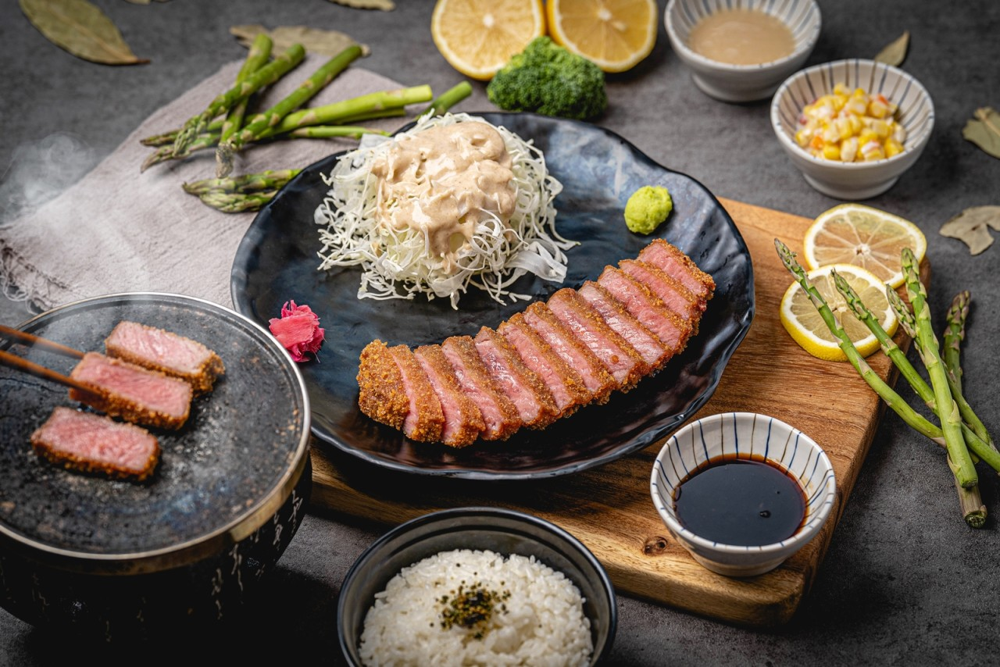
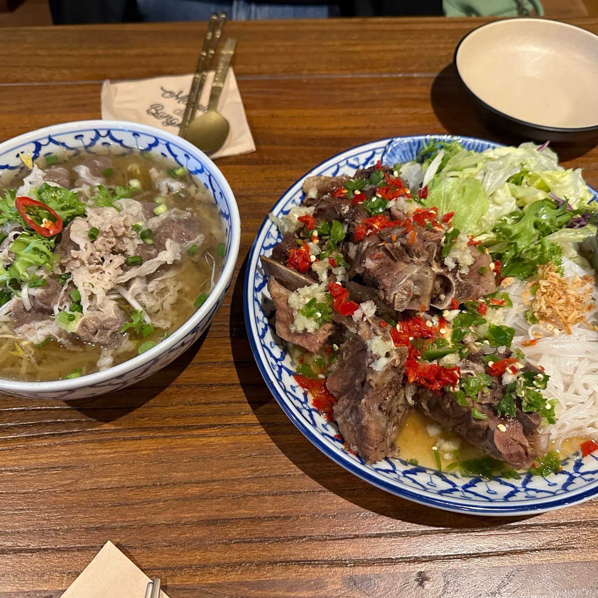

대구광역시의 맛집
지역을 선택하세요:
북구
동구
달성군
서구
중구
달서구
남구
수성구
⇑
🏠
사진을 누르면 네이버 페이지로 이동합니다.
북구 맛집
대호양곱창 칠곡점
서율이네침산직영점
뜨돈 칠곡점
동구 맛집
팔공노을철판구이
전농부의 풀꽃밥상
사파키친
달성군 맛집
정미네
호랑이장칼국수 가창본점
옹심이칼국수
서구 맛집
푸른회식당
자박갈비 북구청점
시골돼지국밥
중구 맛집
동경산보
이자와 동성로점

맨션 드 방콕

달서구 맛집
유쾌한뭉티기 대구본점
돼지만 진천점
제형면옥 막뚱이네
남구 맛집
앞산큰골집 앞산본점
후라토식당 대구앞산점
블루웨이브
수성구 맛집
제형옥 범어점
아티코
숨쉬는순두부 범어점